Executive SummaryOne platform, five clients, zero overclaim
Celnet covers the full FX-options coverage ceiling — vanilla → the complete
first-generation exotics → structured & path-dependent products → American/Bermudan
early exercise → correlated multi-asset baskets → an LSV booking model + standalone
Heston — all on the one unversioned celnet-proto contract, parity-gated, and
reachable from the GUI, Rust SDK, CLI, the 27-function Excel add-in and the byte-identical
WebSocket mirror. Three grounded pillars:
Catalogue depth
19 productsVanilla through American/Bermudan and correlated baskets,
plus an LSV booking engine — the breadth deep-catalogue incumbents charge for, delivered open
and microsecond-class. celnet-exotics, celnet.proto:1016-1062.
One contract, five clients
bit-identicalValues match across GUI / SDK / CLI / Excel / WS — no
versioning, no N/N-1 shims. Proven by CLIENT-PARITY-MATRIX.md.
Nanosecond core
~42 ns p50Pinned zero-alloc hot core, price + 13 Greeks,
measured M4 in-core, gated absolutely to the §1.2 budget. celnet-bench/core_load.rs.
Server-side firm risk
no loop-and-sumHierarchical roll-up, FRTB-SA capital and internal
XVA computed server-side; clients read aggregates. RiskService, celnet-risk-cube.
Open quant SDK
run private IPCustom models in-engine, sandboxed & deterministic —
Tier-0 native + Tier-2 wasmi shipped. celnet-plugin-host.
Honest evidence trail
labelled proofEvery figure tagged in-core / M4 / loopback; MC products carry a price std-error; deploy-gated absolutes are never claimed in-repo.
The thesis explicitly does not assert any deploy-gated absolute. See the
Honest Boundary section, carried verbatim from
COMPLETION-PROGRAM.md §4.
Capability MapThe whole platform at a glance
![One-page vendor-neutral capability map: a navy Celnet core ringed by six clusters — pricing & analytics (vanilla, five smile families incl. eSSVI, the complete 19-product catalogue through first-gen exotics, structured/path-dependent, American/Bermudan, correlated baskets and LSV booking), risk (book-shaped scenario risk, firm-wide cube, FRTB-SA, internal-only XVA over synthetic netting), the real-time edge, extensibility (Tier-0 native and Tier-2 wasmi shipped, Tier-1/3 designed), five clients on one contract, and a platform substrate scaling out over a Raft-replicated log, SPMC fan-out ring and cross-fleet risk fan-out — all over the Celer trade lifecycle with a verbatim honest boundary.](assets/celnet-capabilities/fig-12-capability-landscape.png)
Quant & PricingThe full catalogue, per-class validated
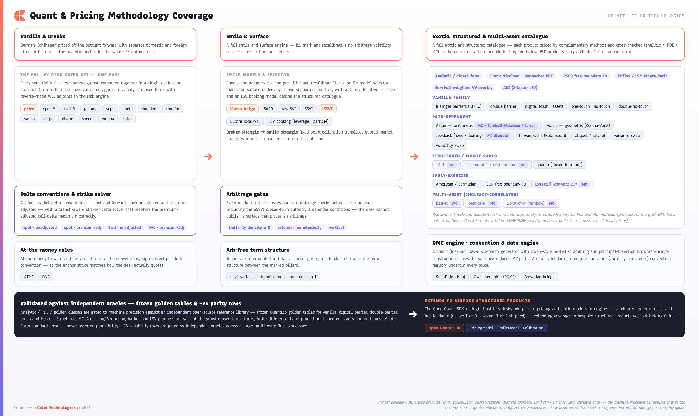
The tiered catalogue (every arm on the one wire)
| Tier | Products | Engine / method | Validation | Std-err? |
|---|---|---|---|---|
| Vanilla & Greeks | European vanilla; multi-leg strategy (RR/strangle/straddle/seagull) | Garman-Kohlhagen closed form; 13 Greeks (analytic + AAD adjoint) | QuantLib golden + FD | — |
| First-generation exotics | Digital (both styles); one-/no-/double-touch & DNT; all 8 single + double barriers; window-barrier | Analytic + Crank-Nicolson/Rannacher PDE + Philox MC + survival-VV overlay | QuantLib golden (digital/barrier/touch) | — / MC |
| Closed-form structured | Variance & volatility swap; Asian; forward-start / cliquet; quanto; lookback (continuous) | Log-contract replication & Carr-Lee; Turnbull-Wakeman / Curran; Rubinstein; closed-form | Closed-form limits + parity rows | — |
| Path-dependent MC | TARF; accumulator; discrete lookback; basket / best-of / worst-of | Cholesky-correlated GBM MC over scrambled-Sobol / Brownian bridge | Parity vs independent MC; convergence checks | price std-error |
| Early exercise | American / Bermudan | PSOR free-boundary finite difference (default) + Longstaff-Schwartz LSM (lsm_paths>0) |
Parity vs FD/LSM cross-check | std-error (LSM) |
| Booking model | LSV booking engine; standalone Heston | Heston backbone + Dupire leverage, particle calibration, ADI PDE; Carr-Madan + Fang-Oosterlee COS | Heston golden + parity | — |
| Smile / surface | VV, SABR, SVI, SSVI, eSSVI; Dupire local-vol | Market-to-smile calibration; butterfly + calendar + vertical no-arb gates; versioned marked surface | Breeden-Litzenberger density & calendar parity | — |
| QMC engine | Sobol′ + Brownian bridge variance reduction | Joe-Kuo Sobol, Owen scramble, principal-bisection bridge | KAT + measured ~38× / ~88× variance reduction | — |
Architecture & EngineOne contract over a pinned zero-alloc core
![Architecture diagram: inbound vendor and Celer feeds enter via a market-data seam into a navy Celnet core framed by the single celnet-proto contract; the quant-engine band names five smile families including eSSVI and the full 19-product exotic catalogue; the plugin band shows Tier-0 native and Tier-2 wasmi as shipped and Tier-1/3 as designed and deploy-gated; bit-identical client surfaces on the right; a scale-out band names the Raft-replicated log, SPMC fan-out ring and cross-fleet risk fan-out; Standalone/Hybrid/CelerIntegrated deployment modes and an egress governor run along the bottom over a verbatim honest-boundary footnote.](assets/celnet-capabilities/fig-01-system-architecture-adaptability.png)
celnet-proto contract wrapping a
pinned zero-allocation hot core that prices the full catalogue, emits bit-identical surfaces
across GUI / Excel / SDK / CLI / WebSocket / FIX / Celer Trader, scales out over a
Raft-replicated log and SPMC fan-out ring, and deploys three ways through reversible adapter
swaps behind a conflating egress governor.![Architecture diagram showing an async edge (gRPC service families, byte-identical WebSocket JSON mirror, FIX 4.4 engine) feeding pinned zero-allocation hot cores through wait-free single-producer/single-consumer request and response rings, lock-free read-mostly publication via an atomically-swapped market-state snapshot, single-writer seqlock top-of-book and cache-padded counters, blue-green zero-downtime handoff, a durable per-record-CRC journal that replays bit-identically, and Raft-replicated scale-out with a lock-free SPMC fan-out ring, over a muted honest-boundary footnote.](assets/celnet-capabilities/fig-13-engine-concurrency.png)
Risk · FRTB · XVABook and Risk are two zooms of one cube
![Two-band diagram: book-shaped scenario risk from the pricing hot core into a spot-vol shock grid, bucketed vega, cross-gamma and theta-roll feeding a versioned marked-surface registry (VV/SABR/SVI/SSVI/eSSVI); and a firm-wide eight-dimension position-fact cube fed by a normalized fact stream of vanilla and exotic legs, with additive roll-up plus non-additive VaR/ES and FRTB-SbM curvature, pruned by entitlements and a cascading limit tree, a FRTB-SA and XVA tile (CVA/DVA/FVA, synthetic netting, internal-only), served to GUI, SDK and Excel, with a footnote that XVA is internal over synthetic netting sets and MC exposures carry a price std-error.](assets/celnet-capabilities/fig-06-risk-architecture.png)
Regulatory capital — FRTB-SA
Standardised-Approach Sensitivities-based Method: within-bucket Kb and
cross-bucket aggregation, the three correlation scenarios → max with the
MAR21.6(2) 0.75ρ low-correlation floor (hand-pinned BCBS constants — defended by a
transform unit test against a circular-oracle defect), curvature Kb±, and
RRAO, with an honest DRC = 0 for deliverable FX (no issuer JTD). celnet-risk-cube/frtb.rs.
Counterparty valuation — XVA
CVA / DVA / FVA over EPE/ENE exposure profiles, with closed-form CVA parity.
celnet-xva (cva, exposure, netting, survival).
ExtensibilityOpen Quant SDK — run private IP in-engine
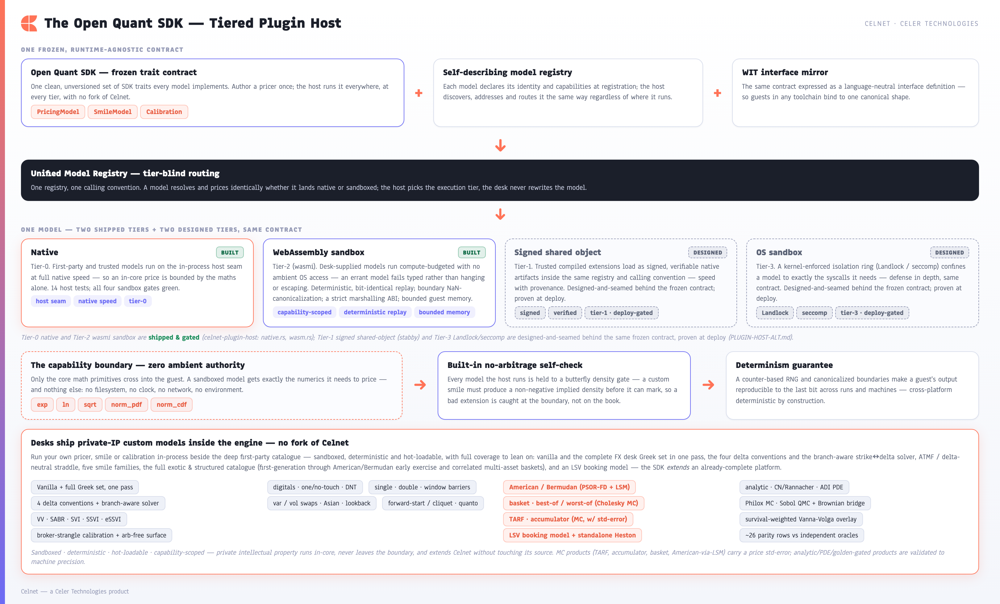
| Tier | Mechanism | Isolation | Status |
|---|---|---|---|
| Tier-0 Native | dyn PricingModel via the tier-blind HostModel seam | In-process, trusted | Shipped · 14 tests, 4 WS-G gates |
| Tier-2 WebAssembly | wasmi fuel-metered, no-WASI; only exp/ln/sqrt/norm_pdf/norm_cdf exposed | Deterministic sandbox, capability-denied | Shipped · replay bit-identity gate |
| Tier-1 Signed .so | stabby ABI-stable signed shared object | Process-level, signature-verified | Designed · deploy-gated |
| Tier-3 OS sandbox | Landlock / seccomp ring | Kernel-enforced | Designed · deploy-gated |
celnet-plugin-host/src/{native,wasm}.rs.Performance & LatencyMeasured, gated, honestly labelled
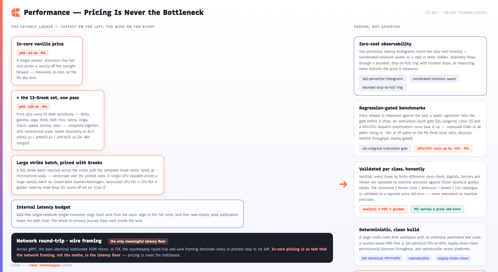
Measured & gated (host-local, single-core)
celnet-bench/src/bin/core_load.rs.Scalability & Scale-OutDistributed correctness, loopback-proven
![Two-zone architecture diagram. Zone A, the node-local hot substrate, shows the async edge feeding pinned zero-allocation hot cores over wait-free SPSC rings, lock-free read-mostly state, blue-green handoff with a durable checksummed journal, batched repricing, a cross-platform GPU pricing backend, and zero-cost observability. Zone B, the horizontal scale-out fabric, shows a highest-random-weight rendezvous partition map, Raft-replicated state with election, conflicting-tail truncation, compaction, InstallSnapshot and hot-standby takeover replaying bit-identically, cross-fleet risk fan-out equal to single-node to 1e-12, and a conflating egress governor over a lock-free SPMC broadcast ring. A footnote states the honest boundary.](assets/celnet-capabilities/fig-08-scaleout.png)
f64::to_bits)
replay and hot-standby takeover; cross-fleet risk fans out to equal the single-node aggregate
to 1e-12; and a conflating egress governor over a lock-free SPMC fan-out ring (per-pair,
exact conflation accounting received + skipped == produced) streams continuous prices
to many counterparties.celnet-replog, celnet-fanout, celnet-risk-fleet,
celnet-server/services/pricefanout.rs.API & Client ParityOne unversioned contract, five service families
![Architecture diagram showing a central coral-marked Celnet contract hub fanning out to six client surfaces (gRPC, byte-identical WebSocket mirror, Rust SDK, CLI, 27-function Excel add-in, React/WebGPU GUI), each labelled same contract and value bit-identical, with the contract carrying pricing, quote/RFQ, multiplex stream, the unified 19-product Instrument, surface marking with the VV/SABR/SVI/SSVI/eSSVI smile-model selector, the market-series feed, the RiskService roll-up plus limits, and attribution identity, and a footnote that Monte-Carlo products carry a price standard error.](assets/celnet-capabilities/fig-02-api-first-parity.png)
The five gRPC services (+ byte-identical WebSocket JSON mirror)
| Service | RPC | Request → Response | Purpose |
|---|---|---|---|
| PricingService | Price | PriceRequest → PriceResponse | Price an instrument; full 13-Greek risk; PriceResponse carries price_std_error for MC products. |
| QuoteService | RequestQuote | QuoteRequest → Quote | Tradable two-way quote (idempotent on key); Quote carries std-error. |
AcceptQuote | QuoteAccept → Execution | Accept & book the resulting execution. | |
RejectQuote | QuoteReject → RejectAck | Decline to trade; typed ack, never books. | |
| StreamService | StreamSession | stream ⇄ stream | One bidirectional multiplex session: many subscriptions, snapshot/sequenced-update/resync/in-place-modify, market-series feed, heartbeat observability, and click-to-trade Execute. |
| RiskService | ListPositions | ListPositionsRequest → ListPositionsResponse | Scoped + entitlement-pruned positions with attribution. |
AggregateRisk | AggregateRiskRequest → AggregateRiskResponse | Server-side roll-up over an org dimension: netted additive + re-derived non-additive in a reporting numeraire. | |
DrillRisk | DrillRiskRequest → DrillRiskResponse | The Book → Risk drill, entitlement-pruned. | |
LimitStatus | LimitStatusRequest → LimitStatusResponse | Limit tree + RAG utilization + hard-breach escalation. | |
| SurfaceService | GetSmile | GetSmileRequest → Smile | Calibrated smile for one (pair, tenor) on the delta axis. |
MarkSurface | MarkSurfaceRequest → MarkSurfaceResponse | Mark/recalibrate from broker quotes; selectable smile model (VV/SABR/SVI/SSVI/eSSVI). | |
Scenario | ScenarioRequest → ScenarioResponse | Reprice across a spot/vol/rate shock grid. |
The WebSocket JSON mirror is byte-identical across all five services over the same
CoreLink / SurfaceBook (celnet-server/src/lib.rs:31,177,359).
Smile selection is one of five models; the PricingModel directive (analytic vs
LSV booking) is field 22 on Instrument. Standardise on price + 13 Greeks.
The unified 19-product Instrument oneof
| # | Product | Engine / method | Std-err |
|---|---|---|---|
| 7 | Vanilla | Garman-Kohlhagen closed form | — |
| 8 | Strategy (RR/strangle/straddle/seagull) | Leg composition over GK | — |
| 9 | SingleBarrier (KO/KI, all 8) | Analytic / CN-Rannacher PDE / Philox MC + VV overlay | — |
| 10 | DoubleBarrier | PDE / MC, golden-gated | — |
| 11 | Digital (both styles) | Analytic, golden-gated | — |
| 12 | Touch (one/no/double-no/double-one) | Analytic + survival-VV, golden-gated | — |
| 13 | VarianceSwap | Log-contract 1/K² static replication | — |
| 14 | VolatilitySwap | Carr-Lee convexity adjustment | — |
| 15 | AsianOption (arithmetic average) | Turnbull-Wakeman / Curran | — |
| 16 | ForwardStart | Rubinstein closed form | — |
| 17 | Cliquet / ratchet | Σ forward-start legs / clamped MC | MC (capped) |
| 18 | Quanto (vanilla / digital) | Settlement-currency converted closed form | — |
| 19 | Tarf (Target-Redemption Forward) | Geared-fixing strip MC with KO target | price std-error |
| 20 | Accumulator | Periodic pivot accumulation, up-and-out MC | price std-error |
| 21 | Lookback (floating/fixed) | Continuous closed form / discrete MC | MC (discrete) |
| 23 | WindowBarrier | LSV PDE (no closed form) | — |
| 24 | AmericanOption (American/Bermudan) | PSOR free-boundary FD / Longstaff-Schwartz LSM | std-error (LSM) |
| 25 | BasketOption (basket/best-of/worst-of) | Cholesky-correlated multi-asset GBM MC | price std-error |
Field numbers 7–25 (22 reserved/unused). Each MC arm carries
price_std_error — never labelled machine-precision. XVA is not on the wire
(internal-only).
Client-surface reference
Rust SDK — celnet-client (~20 typed methods)
CLI — celnet-cli (7 top-level commands)
CLIENT-PARITY-MATRIX.md, with honest
exceptions stated (e.g. basket Greeks deliberately zeroed; CLI market-series via the one-shot
stream subcommand). A ✅ means the surface actually exercises the wire contract, not a placeholder.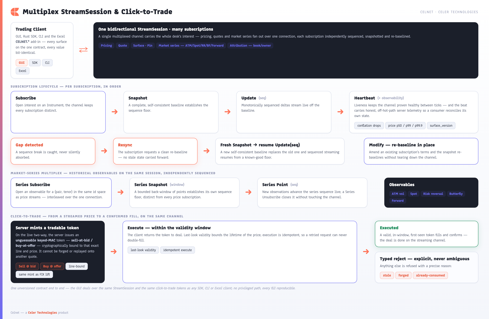
surface_version), interleaves a market-series flow (ATM vol,
spot, risk reversal, butterfly, forward), and turns a streamed price into a confirmed fill via an
unguessable line-bound keyed-MAC tradable token with last-look validity and idempotent typed
execution.Excel Integration27 CELNET.* functions, one contract
Three design principles, verbatim: read = zero click (a CELNET.* formula is
a live read), write = two-phase (mark/recalibrate is explicit), and no pricing in the
cell — every value comes from the server over the same contract, with per-cell convention +
surface-version transparency in the spill footer. MC functions disclose price_std_error;
BASKET's Greeks are honestly deferred (zeroed); BARRIER accepts model=ANALYTIC|LSV;
MARKSURFACE/MARK expose all five smile models incl. eSSVI.
| Group | Function | Signature | Spill / output |
|---|---|---|---|
| Pricing | CELNET.PRICE | (pair, tenor, strikeOrDelta, callPut, notional) | scalar mid premium |
CELNET.GREEKS | (pair, tenor, strikeOrDelta, callPut, notional) | 14×2 spill: 13 Greeks + convention footer | |
CELNET.RFQ | (pair, tenor, strikeOrDelta, callPut, notional) | two-way bid/offer + std-error + footer | |
CELNET.SUBSCRIBE | (pair, tenor, strikeOrDelta, callPut, notional) | streaming live price | |
CELNET.SERIES | (pair, observable, tenor?, delta?) | streaming series point (ATM vol/spot/RR/BF/forward) | |
| Exotics | CELNET.BARRIER | (pair, tenor, strikeOrDelta, callPut, notional, barrier, kind?, side?, upperBarrier?, rebate?, monitoring?, model?) | premium + Greeks + footer · model=ANALYTIC|LSV |
CELNET.WINDOWBARRIER | (…, barrier, side?, windowStart?, windowEnd?, mcPairs?, mcSteps?) | premium + std-error + footer | |
CELNET.DIGITAL | (pair, tenor, strike, callPut, notional, style?, payout?) | premium + Greeks + footer | |
CELNET.TOUCH | (pair, tenor, kind, barrier, notional, rebate?, upperBarrier?, monitoring?) | premium + footer | |
CELNET.VARSWAP | (pair, tenor, notional, strikeVol?) | fair-variance strike + PV | |
CELNET.VOLSWAP | (pair, tenor, notional, strikeVol?) | convexity-adjusted fair-vol strike + PV | |
CELNET.ASIAN | (pair, tenor, strike, callPut, notional, averaging?, observations?, method?, elapsedAvg?, elapsedWeight?) | premium + footer | |
CELNET.FORWARDSTART | (pair, tenor, callPut, moneyness, reset, notional) | premium + footer | |
CELNET.CLIQUET | (…, moneyness, periods, notional, localFloor?, localCap?, globalFloor?, globalCap?, mcPairs?) | premium (+ std-error if clamped MC) | |
CELNET.QUANTO | (pair, tenor, callPut, strike, notional, conversionVol, correlation, payoff?) | premium + footer | |
CELNET.TARF | (…, strike, target, leverage, fixings, notional, redemption?, fixingNotional?, mcPairs?) | premium + std-error + footer | |
CELNET.ACCUMULATOR | (…, pivot, barrier, leverage, fixings, notional, monitoring?, fixingNotional?, mcPairs?, mcSeed?) | premium + std-error + footer | |
CELNET.LOOKBACK | (pair, tenor, callPut, notional, style?, monitoring?, strike?, observations?, mcPairs?, mcSeed?) | premium (+ std-error if discrete MC) | |
CELNET.AMERICAN | (pair, tenor, strike, callPut, notional, style?, bermudanSteps?, lsmPaths?, lsmExerciseDates?, lsmSeed?) | premium (+ std-error if LSM) | |
CELNET.BASKET | (pair, tenor, callPut, strike, notional, legs[][], correlations[][], kind?, mcPaths?, mcReplications?, mcSteps?) | premium + std-error · Greeks honestly zeroed | |
| Surface | CELNET.SURFACE | (pair, tenor, model?) | smile / scenario matrix |
CELNET.MARKSURFACE | (pair, tenor, model, atmVol, rr25, bf25, rr10?, bf10?) | marked surface version · model ∈ {VV,SABR,SVI,SSVI,eSSVI} | |
CELNET.MARK | (pair, tenor, pillar, vol, model?, comment?) | marked pillar · surface version · eSSVI-capable | |
| Risk | CELNET.RISK | (dimension, numeraire, rates?, scope?) | server-side hierarchical aggregate (RiskService) |
CELNET.POSITIONS | (scope?) | entitlement-pruned position list + attribution | |
CELNET.LIMITS | (scope, numeraire, rates?) | limit tree + RAG utilization | |
CELNET.STATUS | () | connection / surface-version status |
RISK/POSITIONS/LIMITS
pull the server's hierarchical aggregate (entitlement-pruned, numeraire-converted, bit-identical to
the GUI Book/Risk views) — not client-composed Greek grids. excel/src/functions/functions.ts.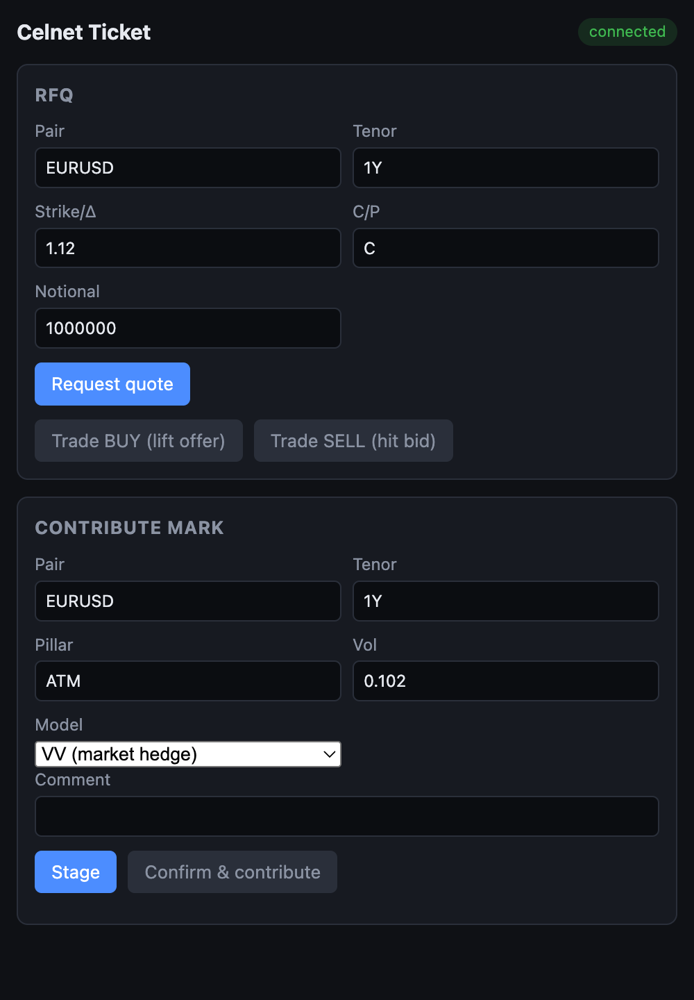
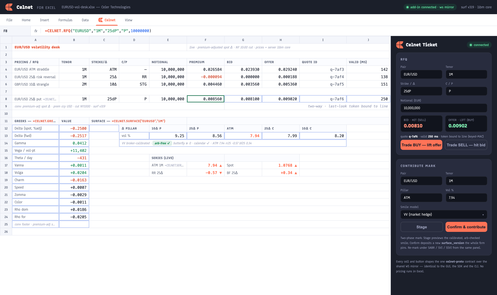
CELNET.* spills premium, std-error, Greeks and a convention footer.Celer IntegrationDesigned estate-native binding, deploy-gated lifecycle
![Two-swimlane diagram of the Celer trade lifecycle: a price path from venues (Fenics/Bloomberg/Refinitiv/EBS as integration targets) through FIX-in, celertech-marketdata, celertech-marketmerchant, distributor and a byte-identical WebSocket mirror to Celer Trader, and an order path through celertech-orderrouting, celertech-risk, celertech-destination, celertech-clearing and celertech-positionmanager, with coral Celnet callouts injecting price/surface and option risk, a navy Celnet pricing-core panel, a book-and-risk cube, a one-contract panel, a three-deployment-mode seam, and a dashed honest-boundary footnote.](assets/celnet-capabilities/fig-09-celer-lifecycle.png)
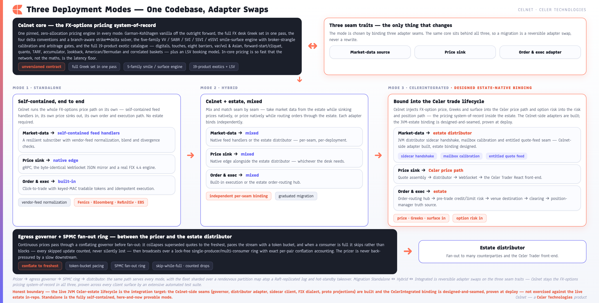
Competitive PositioningA functional superset, proven openly
Celnet now matches Murex MX.3 / Numerix CrossAsset / Fenics kACE on structured/path-dependent breadth while retaining the open-SDK, microsecond, one-contract, deterministic edges they structurally lack. Network framing — not computation — is the only latency floor; no absolute wire SLO is claimed.
| Capability | Celnet | SynOption | Fenics (FMD/kACE) | Bloomberg | Murex / Numerix |
|---|---|---|---|---|---|
| Vanilla + price + 13 Greeks | ✅ QuantLib-gated, AAD adjoint | ✅ closed | ✅ closed | ✅ closed | ✅ |
| User-selectable smile model (VV/SABR/SVI/SSVI/eSSVI) | ✅ 5 families | ❌ single | ❌ single | ❌ closed | ❌ |
| Auditable arbitrage-free guarantee | ✅ butterfly+calendar+vertical | ⚠️ | ❌ ML fill | ⚠️ | partial |
| First-gen exotics (digital/touch/DNT/barrier/window) | ✅ QuantLib-gated | ✅ closed | ✅ kACE | ✅ | ✅ |
| Structured (var/vol swap, Asian, fwd-start/cliquet, quanto, lookback) | ✅ closed-form, parity-gated | ✅ | ✅ kACE | ✅ | ✅ |
| Path-dependent MC (TARF, accumulator) | ✅ MC w/ std-error | ✅ | ✅ | ✅ | ✅ |
| Correlated multi-asset (basket/best-of/worst-of) | ✅ Cholesky MC w/ std-error | ⚠️ | ⚠️ kACE | ⚠️ | ✅ |
| American / Bermudan early exercise | ✅ PSOR FD + LSM | ⚠️ | ✅ kACE | ✅ | ✅ |
| LSV booking model + standalone Heston | ✅ particle ADI + Heston golden | ⚠️ | ⚠️ | ⚠️ | ✅ |
| GPU-accelerated MC/PDE/Greeks (ratios; abs. deploy-gated) | ✅ wgpu + CPU reconcile | ❌ | ❌ | ❌ | ❌ |
| Microsecond pricing, published in-core numbers | ✅ ~42ns p50 / 125ns p99 (M4, §1.2) | ❌ | ❌ | ❌ | ❌ batch/EOD |
| One unversioned gRPC + byte-identical WS contract | ✅ 5 services | ❌ FIX/UI | ❌ feed | ❌ terminal | ❌ |
| Five-client bit-identical parity | ✅ parity matrix | ❌ | ❌ | ❌ | ❌ |
| Server-side hierarchical firm risk | ✅ RiskService + cross-shard fan-out | ⚠️ | ❌ | ⚠️ | ✅ batch |
| FRTB-SA (SbM + curvature + RRAO) | ✅ BCBS-pinned | ❌ | ❌ | ⚠️ MARS | ✅ |
| XVA (CVA/DVA/FVA) | ✅ internal-only, synthetic netting (no wire) | ❌ | ❌ | ⚠️ | ✅ |
| Customer-extensible quant SDK (sandboxed) | ✅ Tier-0 native + Tier-2 wasmi (Tier-1/3 designed) | ❌ | ❌ | ❌ | ❌ |
| Distributed correctness (Raft log + SPMC fan-out) | ✅ bit-identical replay, loopback-proven | n/a | n/a | n/a | ⚠️ |
| Asset-class / pair breadth | ⚠️ 19-pair universe (G10 + EM NDF + XAU/XAG) | ✅ 75 + crypto | ✅ 300+ | ✅ 200+ | ✅ |
| Native Celer trade-lifecycle integration | ✅ seamed (FIX + DeployMode); ⛔ live JVM deploy-gated | ❌ | ❌ | ❌ | n/a |
Competitor cells are stated inferences from public material
(archetype map, not endorsement); see CAPABILITIES-VS-COMPETITION.md.
Trader GUIScreen gallery
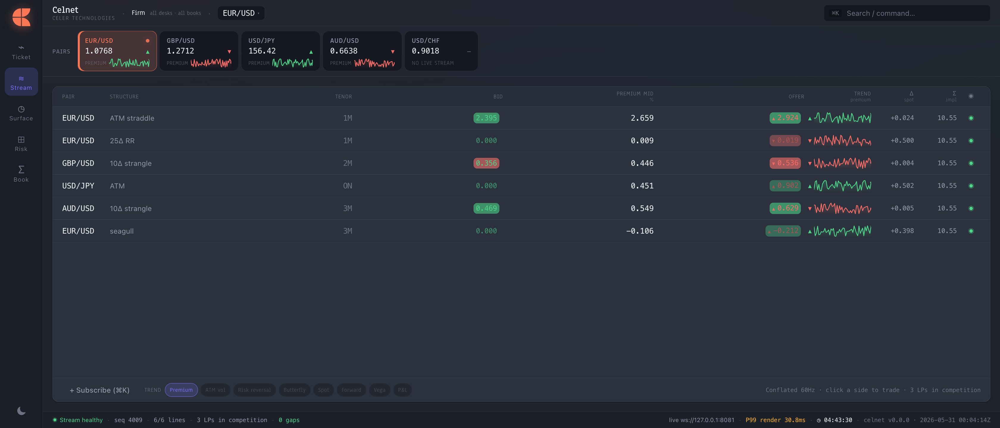
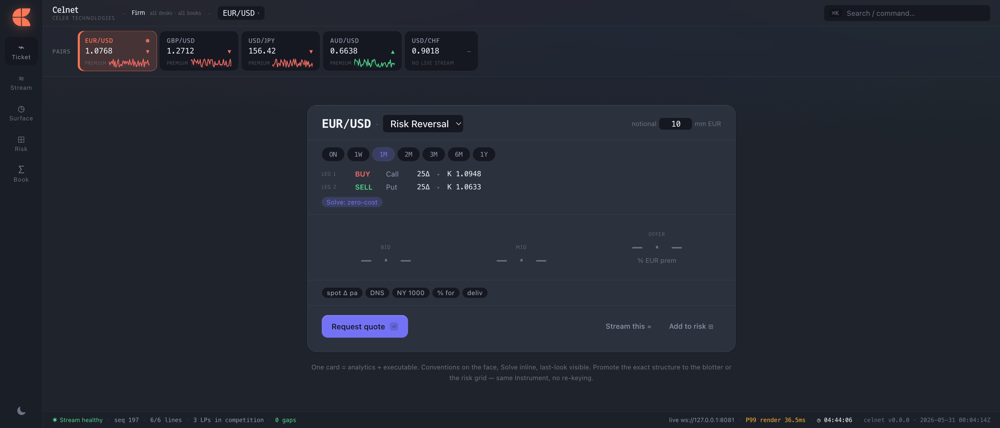
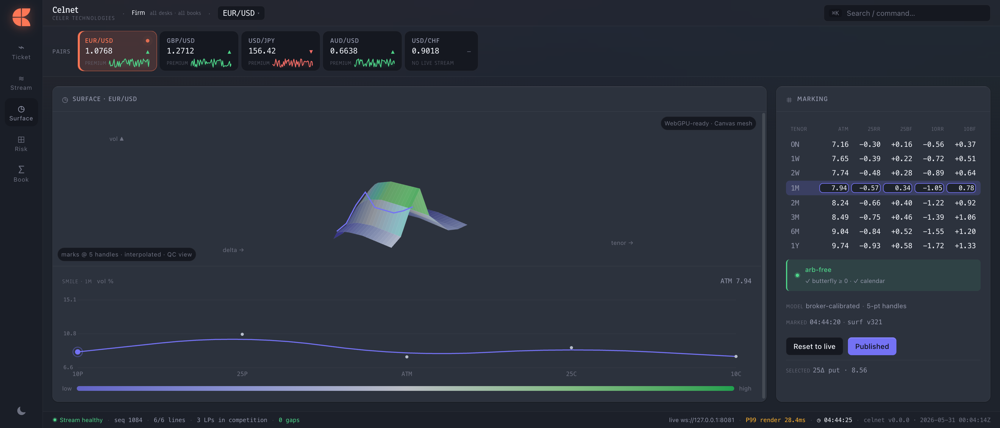
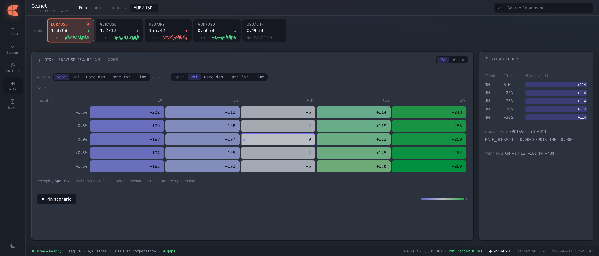
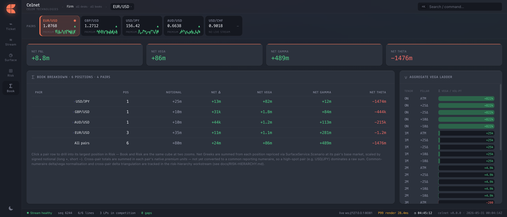
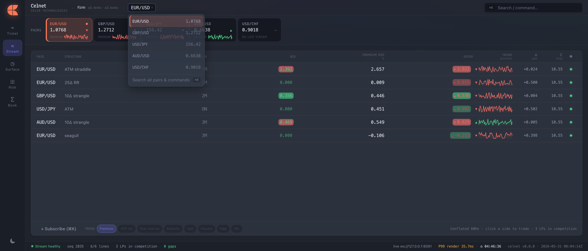
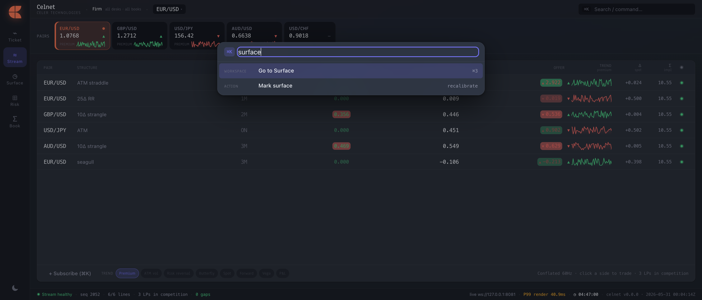
? shortcuts overlay.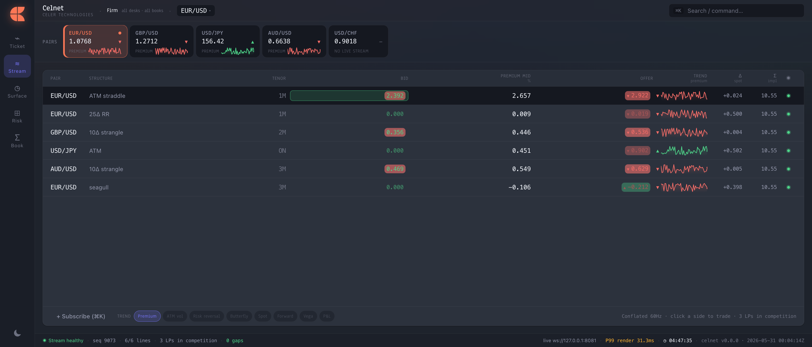
Verbatim — carry everywhereHonest boundary
These canonical lines (from COMPLETION-PROGRAM.md
§4 / POST-COMPLETION-AUDIT class C) are quoted verbatim. None of these is claimed as in-repo-proven.
- Cross-host wire p99 / kernel-bypass NIC latency — deploy-gated; in-repo proves the in-core §1.2 truth-gate + loopback benches only.
- CUDA/NVIDIA absolute GPU throughput + ≤50 ms exotic + Workload-A/B absolute numbers — deploy-gated. M4 Metal lacks f64 ⇒ in-repo proves correctness + RATIOS only (M4/Lavapipe). Never claim f64 on Metal.
- The §11 absolute wire-latency SLOs — deploy-gated (in-repo proves the §1.2 truth-gate + loopback only).
- The entire live JVM Celer estate lifecycle (sidecar / FX_OPTION / inferred hops / tenant overlays) — deploy/live-gated; in-repo has the seams + adapters only.
- Raft §6 dynamic membership / cross-DC transport / real network partitions — deploy-gated; in-repo proves correctness/quorum/framing on localhost multi-process only.
- Plugin Tier-1 signed-.so (stabby) + Tier-3 Landlock/seccomp — designed-only; only Tier-0 native + Tier-2 wasmi are shipped.
- XVA (CVA/DVA/FVA, celnet-xva) — internal-only, NO client/wire surface, synthetic netting sets only; live CSAs/collateral/wrong-way risk are deploy-gated.
- Multi-source surface aggregation — the blend/staleness/divergence ALGORITHM is built and gated; live multi-vendor quote VALUES are an integration/deploy target, not in-repo data.
- MC-priced products (TARF, accumulator, discrete lookback, basket/best-of/worst-of, American via LSM) carry a price std-error — never labelled "machine-precision"; that bar is reserved for analytic/PDE/golden-gated products.